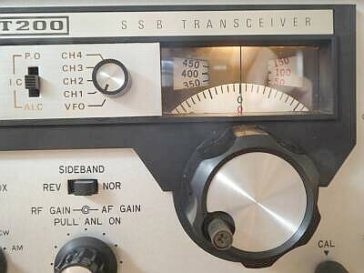
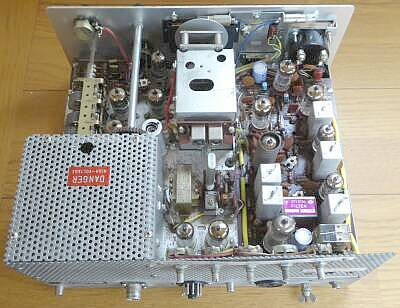
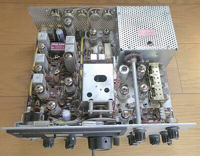
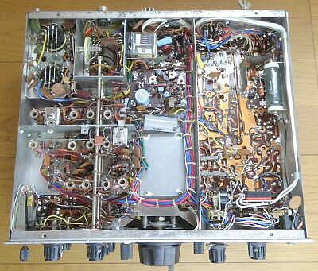
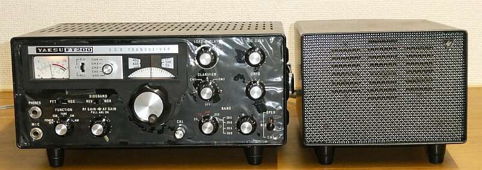

 |
本機は、初期モデルです（最終モデルはブラック仕様）
外部ＶＦＯも考慮がなく、固定ＣＨユニットもオプション設定で、付いているツマミは、奥から取り付けられたφ６のビスに取り付けられている、なんちゃってツマミです
メインダイヤルの構造は、直前に合併したスターのＳＲ -７００／ＳＴ-７００と同じです
また、ＹＡＥＳＵ初のプリミックスタイプのシングルコンバージョン方式という設計も、スターの分派グループによる泉工業 パロス２２-ＴＲと同じです
９ＭＨｚＩＦと、５ＭＨｚ台ＶＦＯの組み合わせです
余談ですが、このプリミックス方式は、ＵＳ．Ｎａｔｉｏｎａｌ社のＮＣＸ-３／ＮＣＸ-２００等を手本にしたのではないかと思われます（ＩＦとＶＦＯ周波数を逆に使用） |
 |
シャーシ上面 リア側から
非常にコンパクトです
ＶＦＯと、ＡＦオシレータ、１００ＫＨｚマーカー以外、全て真空管で構成されています
このスペースで、これだけの真空管が並びますので、かなりの発熱が生じます
１００ＫＨｚマーカーのＯＮ、あるいは送信オペレーションＯＮなどにシーメンスキーが使われていますが、これもスターＳＴ７００の流れかなと、勝手に想像するところです！？ |
 |
シャーシ上面 フロイント側から
ＣＷフィルタオプションの用意はありません
またノイズブランカーの採用はなく、単なるノイズリミッタ（ＡＮＬ）が採用されています
外部電源装置 ＦＰ-２００について
時期によって、１１ＰコネクタのＰｉｎ７の配線が異なっています
外部スピーカーに割り当てられているものと、COMMONとなっているものがありますので、別々に入手した場合は、チェックが必要でしょう
ＦＴ-２００本体も、外部スピーカー出力端子が、RCAレセプタクルのものと、２Pフィーダーコンセントのものがあります |
 |
シャーシ底面
非常にシンプルかつ、うまくまとめられています
ＶＦＯ
温度補償トリマが用意されています
当時のＹＡＥＳＵでは標準仕様です
ある程度のウォームアップ時間は必要ですが、その後のドリフトは実用の範囲です
ダイヤルリニアリティについて
調整後±１ＫＨｚ以内の範囲でリードアウトできます |
|
本機ですが、ファイナル管片側のＧ１配線が断線・・・このため、６ＪＳ６ １本は、お釈迦となっていました
ＡＦオシレータの発振が止まっていて、ＴＵＮＥ／ＣＷでパワーが出ない、キャリアポイント・クリスタルの片方が発振停止、大きなトラブルは以上で、それ以外の問題はありませんでした
ＦＰ-２００との相性で、出てくるスピーカーの音が小さく歪んでいて、一瞬ですが悩みました
必要な対応／調整を行い、実際に稼働させてみて、十分実用に耐えると感じました
当初のスペックは満足しています
アナログＶＦＯについても、十分実用の範囲です
増幅型ＡＧＣの効きも良く、Ｓ/Ｎ良く歯切れの良い受信音が得られます
当時の音がします（今で言うところのいい音ではないでしょうが、通信目的で聞けばいい音です） |
|
 |
こちらが、ブラックフェイスモデル（初期モデル）です
外観の見てくれは良かったのですが、内部はそれなりに劣化が進んでいました（湿気）
まずリレーの接触不良と断線・・・・４８VのDCリレー（コイル抵抗５３００Ω）は入手できそうにありませんので、同じピンのDC１２Vリレーに交換し、制御のためのDC12Vは、ヒーター電圧を整流して得ました（製造時期で、採用されているリレーが異なるようです）
ＩＦ初段の６ＢＡ６に問題あり・・・時間の経過とともに、Ｇ１に＋電位が現れる・・・当然ＡＧＣあるいはＲＦゲイン調整に不具合が発生します
これらの対応後、７～２１ＭＨｚ帯については、
S/N １０ｄｂを得るのに必要なＲＦ入力は、０．５μＶ
２８ＭＨｚ帯においては、１μＶ
ここまでは、ＩＦ段の調整でできました
ＲＦ部は、コアがしっかり接着剤で固定がしてあり、調整はあきらめました
プリセレクタの同調位置からは、調整したいのですが・・・
送信は、使うことは無いとの判断で、手を付けていません
受信は、それなりに良い音で、それなりの感度で行えています
最後に気になるのは、ＢＦＯ（キャリア）漏れ・・・Ｓメータが振れます
ここまで古くなると、少々の新旧はあまり関係ありません
全体の調子は、上記ご紹介の古いモデルのほうが良い・・・古い機械の場合、まさに保管状況によるのでしょう |
| 2024.10 |